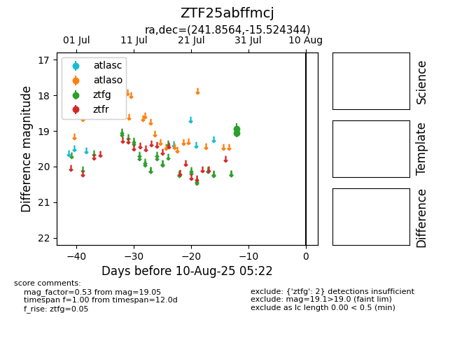

Target ZTF25abffmcj at 2025-08-10 05:22, see:
FINK: fink-portal.org/ZTF25abffmcj
Lasair: lasair-ztf.lsst.ac.uk/objects/ZTF25abffmcj
ALeRCE: alerce.online/object/ZTF25abffmcj
alt names
ZTF25abffmcj (ztf,fink)
coordinates:
equatorial (ra, dec) = (241.8564,-15.52434)
galactic (l, b) = (357.0269,+26.14054)
photometry
last ztfg=19.05
2 ztfg detections
